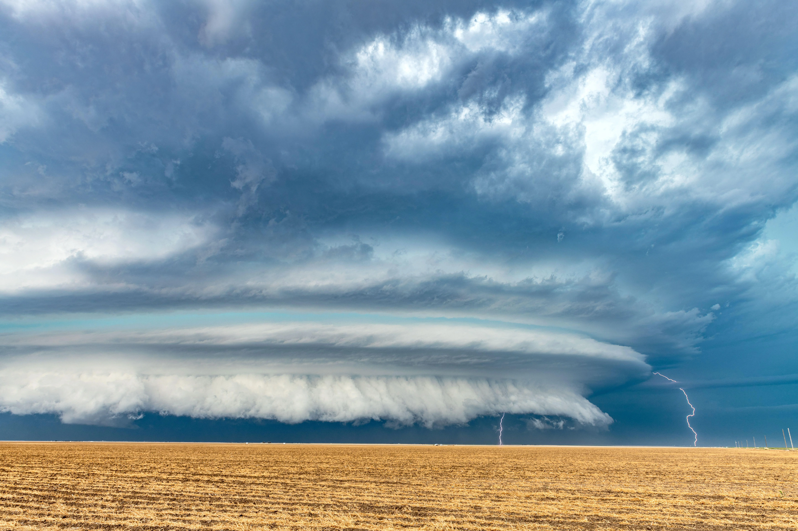

Introduction
How AI is Used in Meteorology
The meteorology industry in the United States operates through a collaborative ecosystem involving the National Weather Service (NWS), part of NOAA, and a growing private sector. The NWS provides foundational weather data, forecasts, and warnings using government-funded satellites, radar systems, and supercomputers, serving as the backbone of national weather infrastructure. Meanwhile, private companies like Spire Global and GeoOptics contribute by supplying specialized data—such as space-based radio occultation measurements—under NOAA contracts, enhancing forecast accuracy and resilience. This public-private synergy is supported by legislation like the Weather Research and Forecasting Innovation Act, which encourages NOAA to integrate commercial data into its models. Together, these sectors ensure that weather services are both scientifically robust and commercially innovative, benefiting industries from agriculture to aviation.
The National Weather Service (NWS) is currently leveraging artificial intelligence in groundbreaking ways to enhance weather forecasting and public safety. One major advancement is HRRR-Cast, an AI-powered sibling to NOAA’s flagship HRRR model, trained on three years of high-resolution weather data to deliver faster and more accurate short-term forecasts. Additionally, NOAA has partnered with Google to integrate AI into hurricane and tropical storm prediction, using machine learning to improve track and intensity forecasts. At the Atlantic Oceanographic and Meteorological Laboratory (AOML), AI is also being used to optimize data assimilation and modeling within the Hurricane Analysis and Forecast System (HAFS), enabling real-time, high-resolution forecasts and better predictions of rapid intensification events. These innovations mark a significant shift from traditional numerical models to AI-enhanced systems that improve forecast precision and response times.
The History of AI in Meteorology
Based on NOAA’s Global Systems Laboratory article, the evolution of AI in meteorology began in the 1980s with rule-based expert systems and early neural networks used for tasks like rainfall-runoff modeling and pattern recognition. In the 1990s, the introduction of backpropagation enabled more effective training of neural networks, expanding applications to climate estimation and satellite image analysis. By the 2000s, machine learning techniques like support vector machines and decision trees were used to improve forecasting accuracy, though operational use remained limited. The 2010s saw a surge in deep learning and big data integration, allowing for more complex models and real-time predictions. In the 2020s, AI became operationally embedded in meteorology, with NOAA deploying advanced models like HRRR-Cast and GraphCast through initiatives such as Project EAGLE, marking a shift from experimental tools to core forecasting systems.